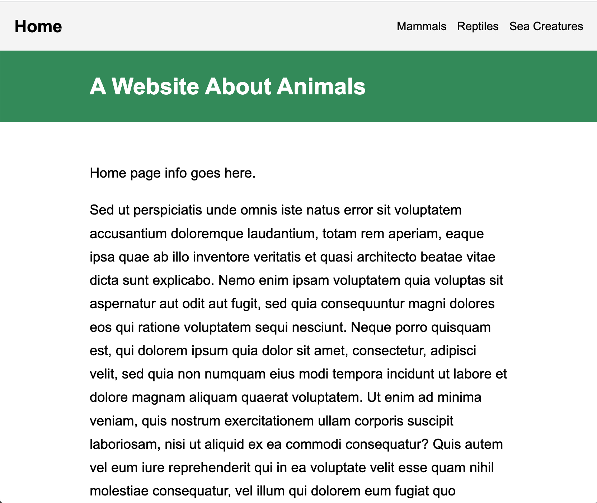
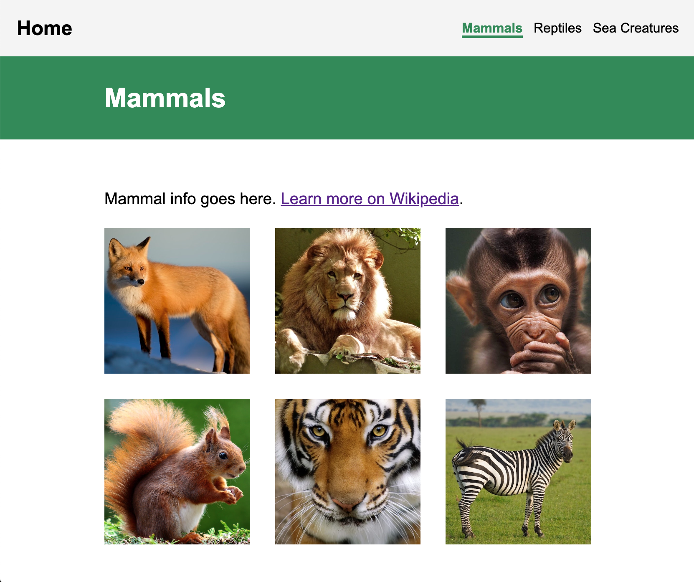
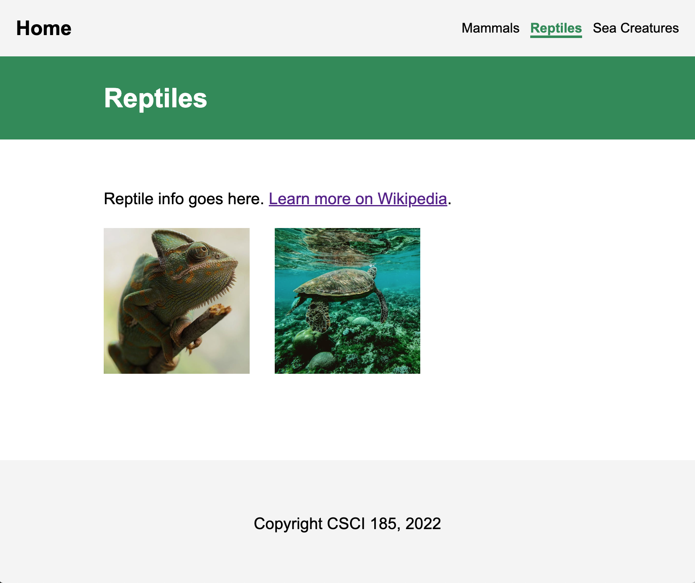
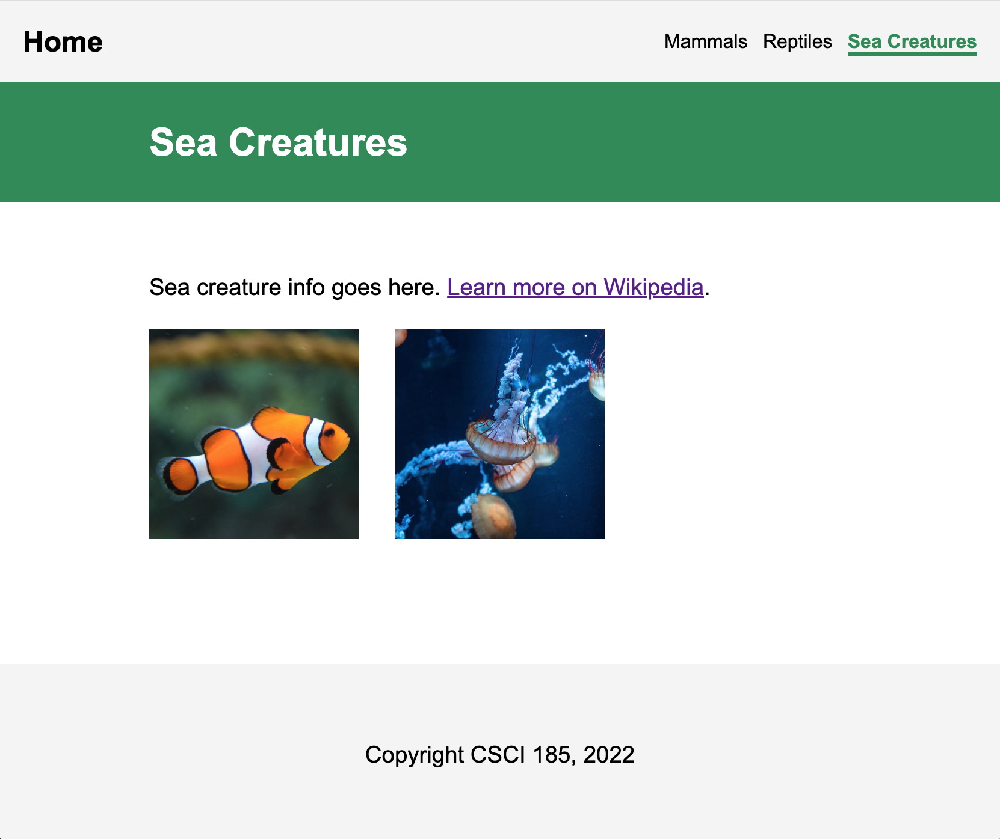
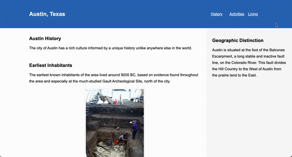

Assignments > HW2: Linking to Internet Resources
Due on Mon, 01/30 @ 11:59PM. 20 Points.
Overview
For your second homework, you will practice some basic HTML tasks that are fundamental to the development of high-quality websites:
Please download the starter files (below) and complete the tasks described below. Read the instructions that are outlined under each task very carefully. You must complete each exercise exactly as the instructions indicate to receive full credit. Otherwise, you will receive partial credit for the parts you correctly completed.
[10pts] Task 1: Linking to Pages & Media Using Relative & Absolute Paths
For Task #1, You will be creating the website shown in this video and pictured in the screenshots below.
   
To do this, open the task01 folder. You should see a file structure that looks like this:
task01
├── images
│ ├── mammals
│ │ ├── fox.jpeg
│ │ ├── lion.jpg
│ │ ├── monkey.jpg
│ │ ├── squirrel.jpg
│ │ ├── tiger.png
│ │ └── zebra.jpeg
│ ├── reptiles
│ │ ├── chameleon.jpeg
│ │ └── turtle.jpeg
│ └── sea-creatures
│ ├── fish
│ │ └── fish.png
│ └── other
│ └── jellyfish.jpeg
├── index.html
├── pages
│ ├── mammals.html
│ ├── reptiles.html
│ └── sea-creatures.html
└── styles.css
Then, complete the 4 subtasks:
- [2pts] Modify
index.html,mammals.html,reptiles.html, andsea-creatures.htmlso that each page links to thestyles.cssstylesheet. You will know that you did it correctly if the web page looks styled when you preview it. - [3pts] Modify the hyperlinks inside of the
<nav>sections ofindex.html,mammals.html,reptiles.html, andsea-creatures.htmlso that every HTML page links to every other HTML page using relative paths.- In case it isn’t clear, the hyperlink associated with the “Home” link text should link to
index.html(see the video above for a demo).
- In case it isn’t clear, the hyperlink associated with the “Home” link text should link to
- [3pts] Add images to
mammals.html,reptiles.html, andsea-creatures.htmlinside of the<section class="photo-container"></section>tag. Ensure that you are using relative paths to the corresponding image in theimagesfolder.- Mammals should display 6 images (fox, lion, monkey, squirrel, tiger, and zebra).
- Reptiles should display 2 images (chameleon and turtle).
- Sea Creatures should display 2 images (fish and jellyfish).
- [2pts] Inside of
mammals.html,reptiles.html, andsea-creatures.html, add a hyperlink to a Wikipedia page where you can learn more about each animal category. You will do this above the<section class="photo-container"></section>tag but still inside of the<main></main>tag.mammals.htmlshould have a link to: https://en.wikipedia.org/wiki/Mammal.reptiles.htmlshould have a link to: https://en.wikipedia.org/wiki/Reptile.sea-creatures.htmlshould have a link to: https://en.wikipedia.org/wiki/Marine_life.
[6pts] Task 2: Using Semantic Containers
For your second task, you are going to practice working with semantic tags. Recall that semantic tags help screen readers and search engines (i.e., robots) understand the structure of your webpage. Using these tags effectively has huge implications for the usability of your website and how effectively search engines and web scrapers are able to index and understand what your page is about.
To practice using semantic tags, you are going to do two things:
- Read this article on semantic tags
- Complete this quiz on semantic HTML and copy the completed HTML to
task02/history.html(inside the body tag).
Please Read Carefully
You will submit your
task02answers as follows:
- Before you click the “Check Your Work” button on Step 10 (the last step of the quiz), you will copy all of the HTML code (with all the edits that you made) and paste your code inside of the body tag in the
task02/history.htmlfile.- Important: Make sure that you copy all of your code BEFORE you click the “Check Your Work” button. Once you successfully complete Step 10, the quiz WILL NOT LET YOU GO BACK and preview your work, so you’ll have to do it again (which is good practice, but also annoying).
- If you correctly completed the assignment, your
task02/history.htmlweb page will look like the web page pictured below:

[4pts] Task 3: Publishing to GitHub using git
When you’re done with task01 and task02:
- Ensure that all of your folders and files are lowercase with no spaces.
- Ensure that your repository on GitHub is called csci185-coursework (and if it’s not, rename it).
- Create a link to from your homepage (which you created during Tutorial 3) to the index.html you just made (which should be stored in the
homework/hw02folder). Recall that your homepage is at the root of your csci185 folder. - Commit and push all of your changes to GitHub (like we did in Tutorials 3).
Here is what my homepage looks like after I’ve published it, except for your HW2 will be a completed HW2 (versus the starter files):
- Webpage: https://vanwars.github.io/csci185-coursework/
- Code: https://github.com/vanwars/csci185-coursework
What to Submit
Please Read Carefully: To submit Homework 2, please paste the following links into the Moodle under the Homework 2 submission section (just like you did for Tutorial 3):
- A link to your homepage (the one you made in Tutorial 3) on GitHub pages, which should link to your
hw02assignment (and previous tutorials and classwork you have done). - A link to your GitHub code repository (where your code files are stored).